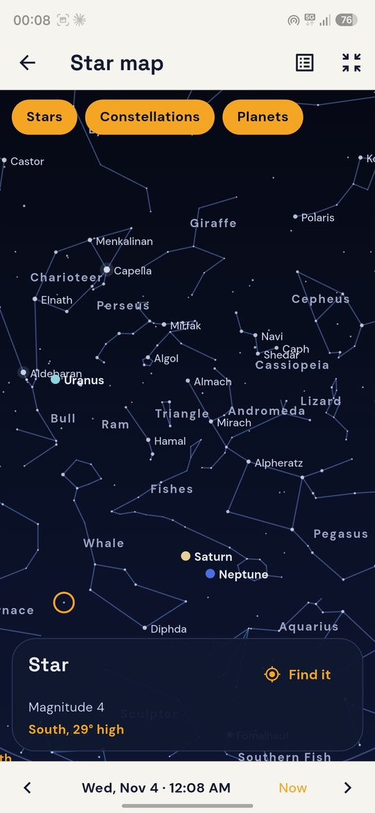
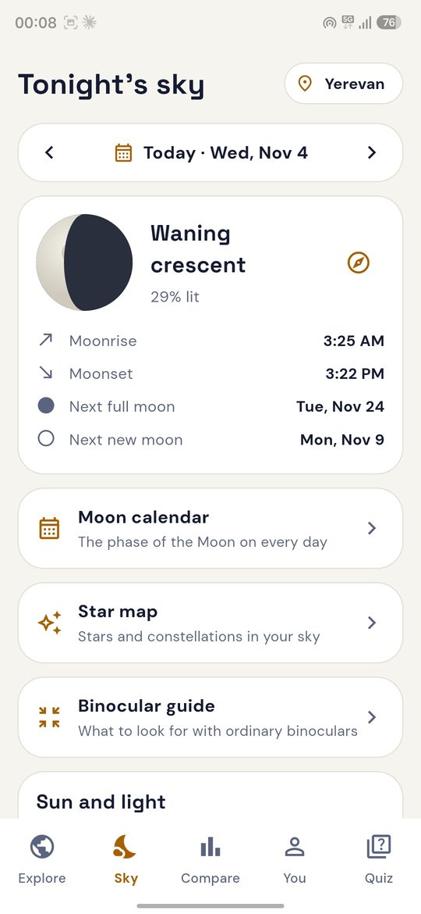
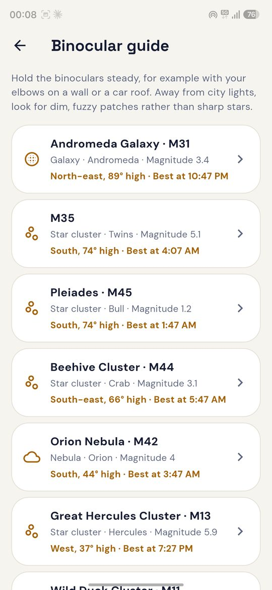
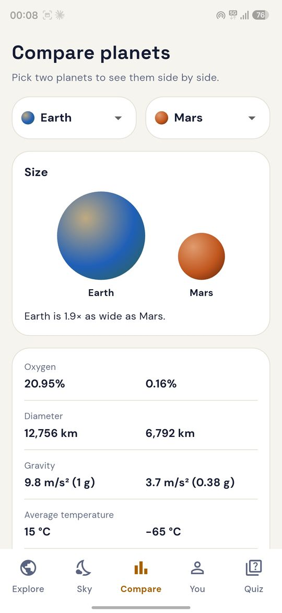
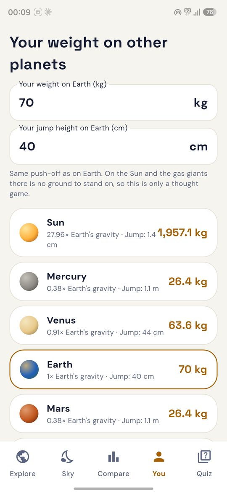
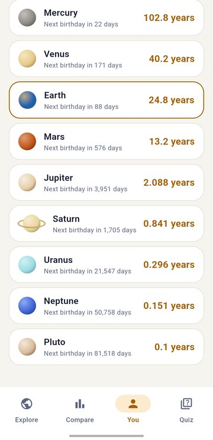
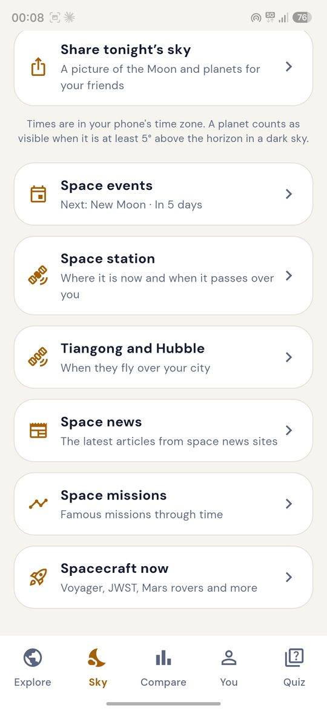
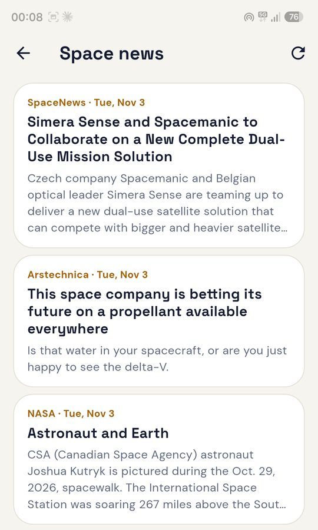

Explore the Solar System, offline first.
Real planet positions, rotating 3D worlds, a star map for your sky, and an honest answer to "could humans live here?"
No ads. No account. No tracking.

Open Astryl right now.
The same app runs in your browser: the planets, the quiz, tonight's sky and the star map. Nothing to install.
A look inside
Screens from the Android app.







Everything in the app
All of it is calculated on your device from NASA and JPL data.
Explore
- 2D map with real positions. Every planet sits where it really is. Pick any date from 1800 to 2050, or press play.
- 3D worlds. Rotate and zoom Earth, Jupiter's Great Red Spot, Saturn's rings, the Sun and Europa's ice.
- 18 worlds. The Sun, 8 planets, Pluto, our Moon and 7 famous moons.
Tonight's sky
- Which planets can I see? Pick your city and see what is up after dark, with times and directions.
- The Moon. Phase, moonrise and moonset, and a calendar for the whole month.
- Sun and light. Sunrise, golden hour, twilight and the dark-sky window.
- Star map. About 1,000 stars and 89 constellations, with stories for eleven of them.
- Binocular guide. Twelve sights for ordinary binoculars.
- Space events and eclipses. The next 12 months.
Learn
- Planet facts. Size, gravity, temperature, day, year, moons.
- Atmosphere and oxygen. What each air is made of, compared with Earth's.
- Could humans live here? A 0 to 10 life score for every world.
- Compare. Any two worlds side by side, in true size.
You
- Your weight and jump on every world.
- Your age on other planets, and My birthday sky.
- Quiz. Three levels, ten questions each.
- Missions and spacecraft. From Sputnik 1 to Chandrayaan-3, and how far Voyager is today.
- Search and favourites.
Web or Android?
The web version is the same app, so you can try it before you install anything. A few things need a phone.
| Feature | In your browser | Android app |
|---|---|---|
| Planets, 2D and 3D, facts, compare, life score | Yes | Yes |
| Quiz, weight, age, birthday sky, missions, spacecraft | Yes | Yes |
| Tonight's sky, Moon calendar, star map, binocular guide, events | Yes | Yes |
| Remembers your city, favourites and quiz scores | No, they reset when you close the tab | Yes |
| Reminders and the daily "tonight" note | No | Yes |
| Compass finder for the Moon and planets | No (needs motion sensors) | Yes |
| Space station, Tiangong, Hubble, launches, news (optional) | No | Yes |
| Share cards, backup and restore | No | Yes |
| Works with no internet | Needs internet to open | Yes |
Android: no store, three steps.
Open the latest release on your phone.
Download the file Astryl-vX.Y.Z.apk.
Open it and allow the install. After that, Astryl updates itself from inside the app.
Built the same way as every app I make
Open source under the MIT licence. Read it, change it, build it yourself.
Offline first
Positions, the Moon, sunrise and the star map are calculated on your device.
Private
No ads, no account, no tracking. No personal data leaves your phone.
English and हिन्दी
The whole app is in English and Hindi, or follows your phone.
Data: NASA Planetary Fact Sheet, JPL approximate positions, stars from d3-celestial (Hipparcos). Fonts: Space Grotesk and DM Sans (SIL Open Font License).